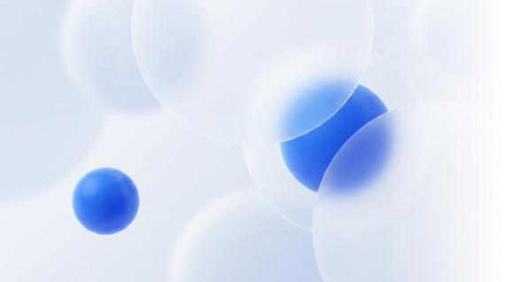
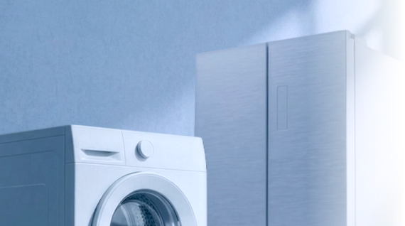
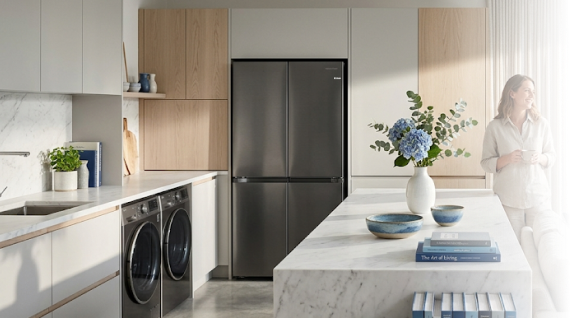
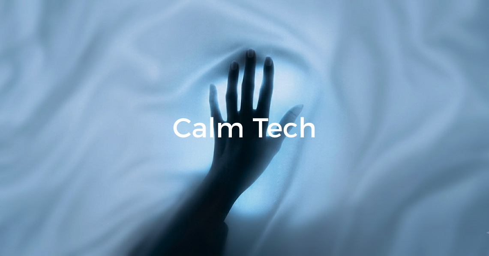
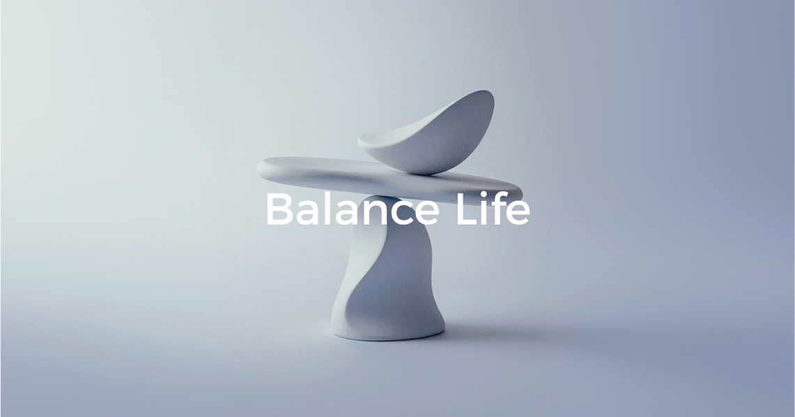

品牌
品牌体验用于统一跨设备、跨品类、跨触点的视觉表达和交互认知。品牌体验的核心目标不是堆叠视觉符号，而是在不同设备、场景和触点之间建立一致、清晰、可信赖的体验秩序。

一致
视觉、交互语言跨品类体验保持统一，降低用户学习成本
克制
品牌表达服务于用户体验，不以装饰性元素干扰核心信息
可信
状态清晰、反馈及时、关键操作可预期，建立长期品牌信任
从价值到视觉表达

艺术优雅
将艺术审美注入交互表达，赋予家电界面优雅从容的艺术格调。

精工奢感
以克制精纯的设计语言沉淀极致品质印象，每一处细节经得起凝视与品鉴。

沉浸体验
以光影叙事构建沉浸式氛围，在交互中注入仪式感与情感共鸣。
品牌设计方向

纯粹隐科技。从不张扬技术本身。卡萨帝将前沿 AI 模型与复杂算力悄然隐匿于极简界面之下，剥离所有繁复与冷硬。通过高度直觉化的多模态交互，让每一次操作都化为从容优雅的艺术享受——在无形中悉心守护，在需要时随心而至，赋予生活不被打扰的从容与自在。

生活艺术化。家电不仅是空间的延伸，更是居住者生活品位与美学志趣的表达。卡萨帝秉持对家居环境与生活节奏的深刻敬畏，将艺术的灵性与生命力注入数字界面。柔和温润的视觉语言与高雅家居氛围浑然一体，在功用与美感之间建立和谐秩序，重塑高端居所的心理归属感。